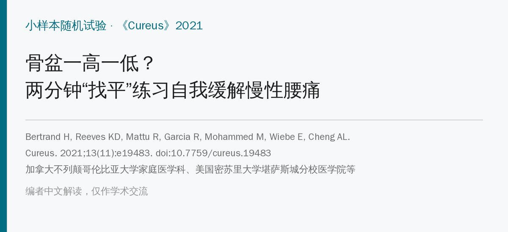
🔖原文信息（编者中文重排）
📚 文献信息
▪ Bertrand H, Reeves KD, Mattu R, Garcia R, Mohammed M, Wiebe E, Cheng AL. Self-treatment of chronic low back pain based on a rapid and objective sacroiliac asymmetry test: a pilot study. Cureus. 2021;13(11):e19483. doi:10.7759/cureus.19483
▪ 作者单位：加拿大不列颠哥伦比亚大学家庭医学科、美国密苏里大学堪萨斯城分校医学院等
▪ 文章类型：开放标签的小样本随机对照预试验（62 人，单中心，随访 2 个月；注册号 NCT03888235）
• 作者用一把粘了小水平仪的尺子，在前屈位比较两侧髂后上棘（PSIS）的高低，叫“骶髂前屈试验”（SIFFT）；高度差 ≥5 mm 就判为骶髂“扭转”
• 再按方向做一个 2 分钟的“找平”练习：痛侧偏高就用大腿顶髂前上棘，痛侧偏低就把大腿后伸到底
• 第 1 个月，练习组的功能（ODI）比常规治疗多改善 15.9 分，做完练习后 90% 的人当场疼痛减轻
• 但这只是62 人、开放标签、作者自创方法的预试验，疼痛的组间差异不显著，原文还有不少数字前后对不上——可以当低成本的自我管理尝试，不能当定论
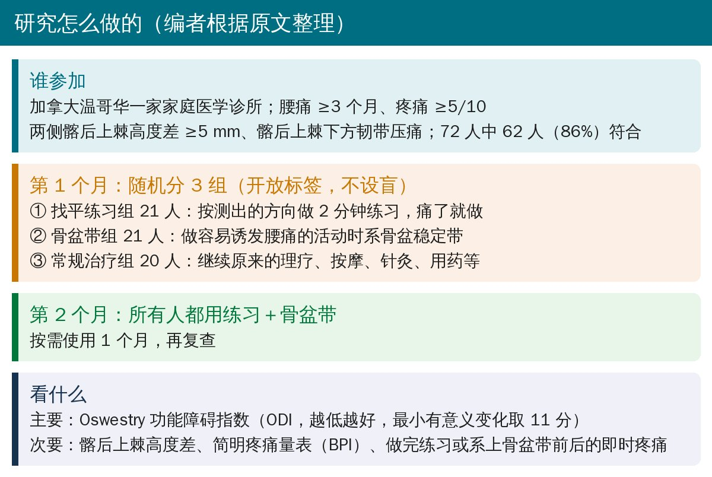
🔖研究设计（编者根据原文整理）
• 入组：腰痛 ≥3 个月、疼痛 ≥5/10、两侧 PSIS 高度差 ≥5 mm、PSIS 下方韧带压痛；排除腿长差 >3 cm、严重全身疾病、坐骨神经病等
• 72 名连续就诊的慢性腰痛患者里，62 人（86%）两侧高度差 ≥5 mm，全部同意参加
• 参与者平均 53 岁、61% 为女性，腰痛平均已有 7 年多；大多数人以前做过理疗、按摩、脊柱手法、核心训练或针灸
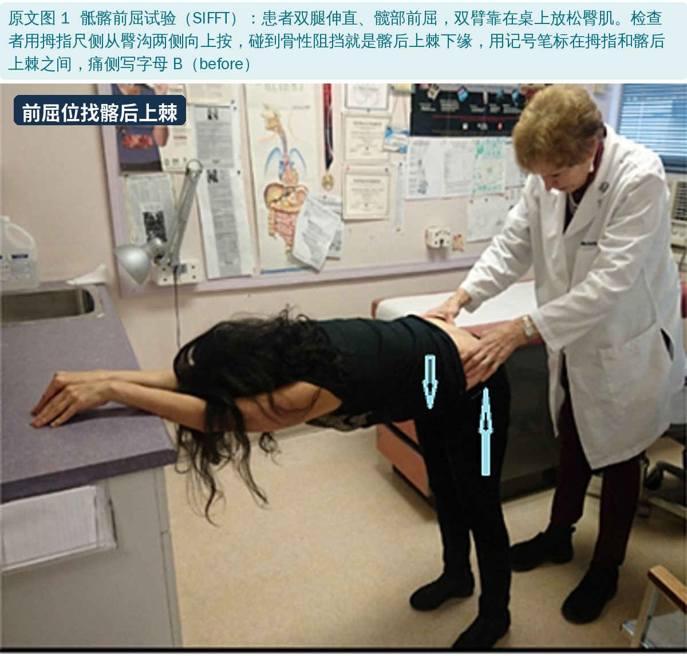
🔖原文图 1：前屈位找髂后上棘
• 先量腿长（肚脐到内踝），差 >1 cm 先在短腿侧垫鞋垫
• 患者双腿伸直、松开腰带，从髋部尽量前屈到接近水平，双臂靠在桌上——臀肌放松，骶骨前倾，PSIS 更好摸
• 检查者用拇指尺侧从臀沟两侧向上推，碰到骨性阻挡就是 PSIS 下缘，用记号笔在拇指和 PSIS 之间做记号
• 患者站直，水平仪放在低的记号上，在高的一侧标出同一水平，量出高度差
• 肥胖或肌肉很发达的人摸不准，可以用超声定位（本研究没用）
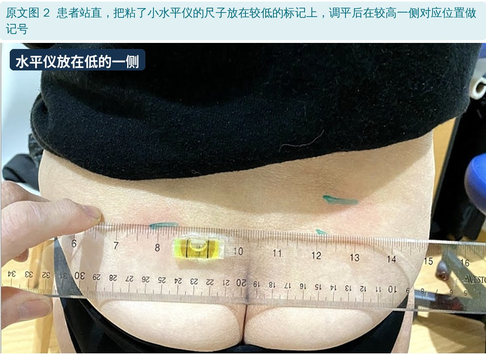
🔖原文图 2：水平仪放在较低一侧
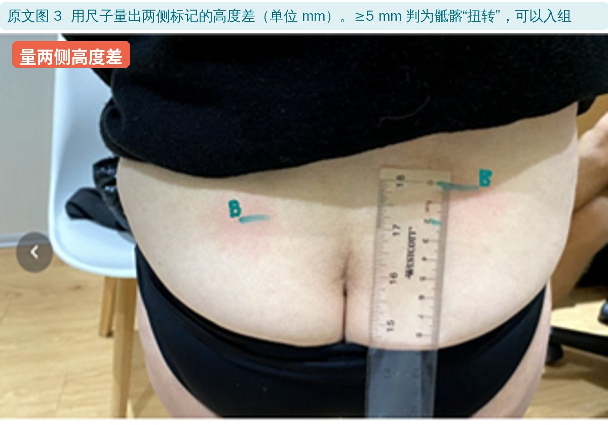
🔖原文图 3：量出高度差
为什么定 5 mm？作者引用 Levangie 的研究：用落地式测量架量 PSIS 高度，误差约 2.7 mm，以 6 mm 区分有无骶髂扭转；作者认为前屈位更好摸，就把阈值定成了 5 mm——这一步没有经过验证。
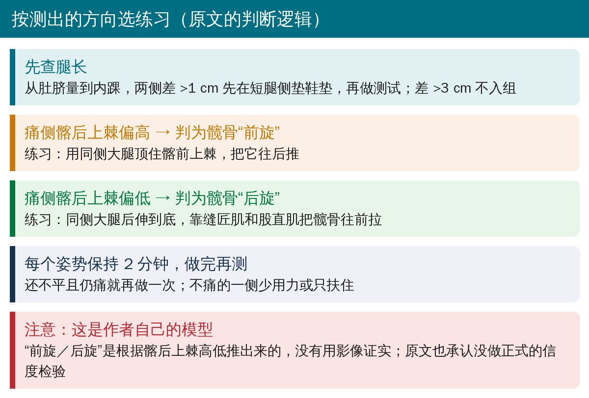
🔖按方向选练习（原文的判断逻辑）
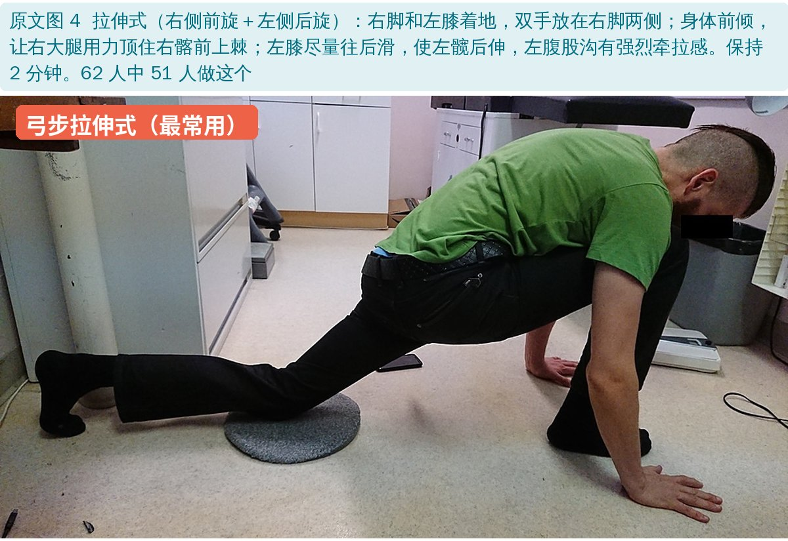
🔖原文图 4：弓步拉伸式
以“右侧前旋＋左侧后旋”为例：右脚和左膝着地，双手放在右脚两侧；身体前倾，让右大腿用力顶住右髂前上棘；左膝尽量往后滑，使左髋后伸，左腹股沟要有强烈牵拉感。保持整整 2 分钟。只有一侧痛时，不痛的一侧少用力。
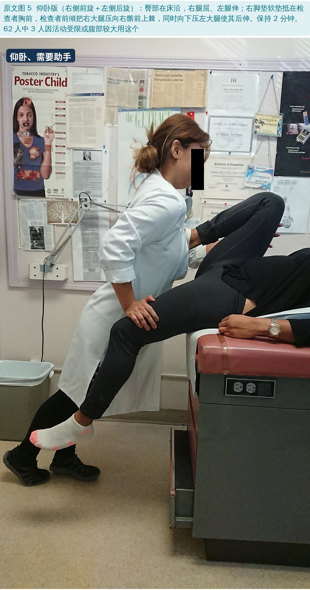
🔖原文图 5：仰卧版
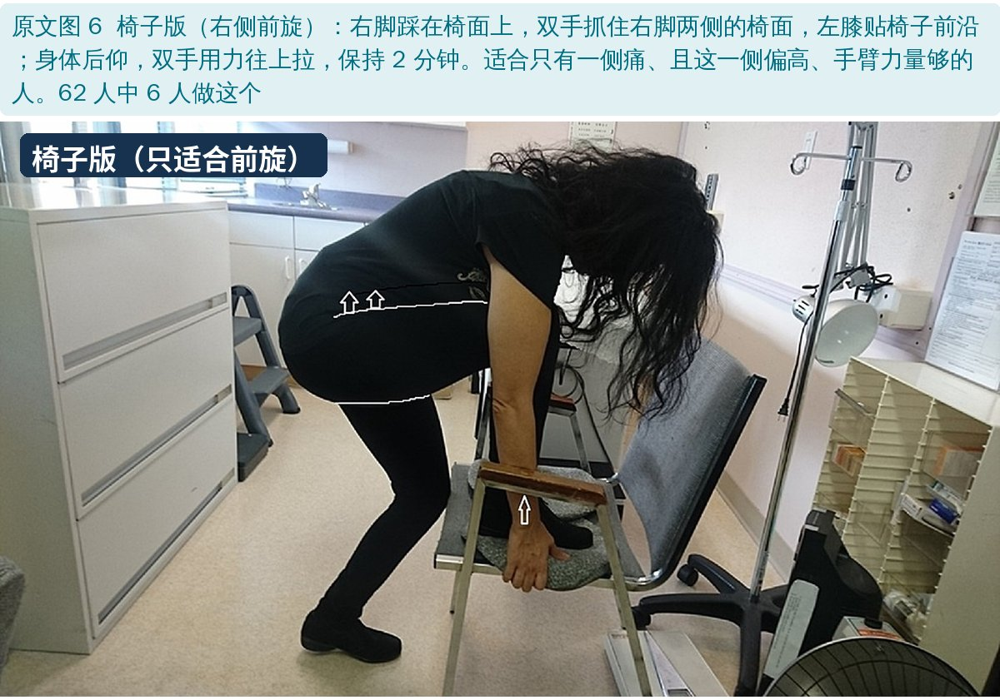
🔖原文图 6：椅子版
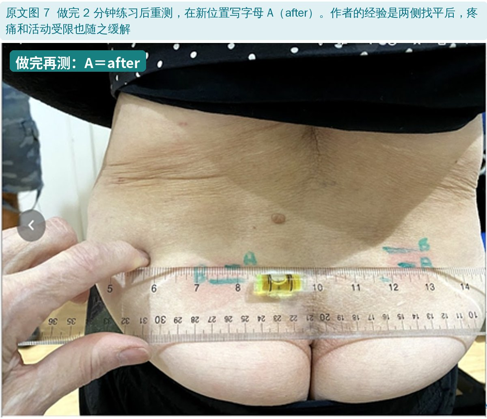
🔖原文图 7：练习后重测
做完练习重新测，两侧还不平且仍痛，就再做一次。练习组看了教学视频后，回家痛了就自己做；1 个月后再配骨盆带。
骨盆带：要系在髂前上棘下方——作者认为系在髂嵴上会把髂骨往外挤、反而让骶髂关节更松。只在做容易诱发腰痛的活动时系。
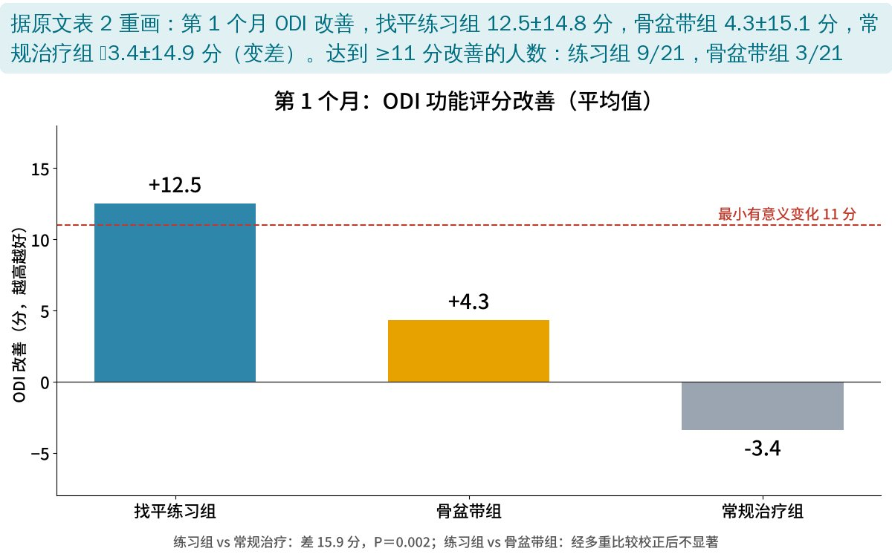
🔖第 1 个月 ODI 改善（据原文表 2 重画）
• 功能（ODI）：练习组改善 12.5 分，常规治疗组反而变差 3.4 分，差 15.9 分（95% CI 6.7～25.0，P＝0.002）；需治疗人数约 3 人
• 练习组 vs 骨盆带组：平均改善 12.5 vs 4.3 分，经多重比较校正后不显著；但达到 ≥11 分改善的人数更多（9/21 vs 3/21）
• 骨盆带单独使用没有优于常规治疗
• 疼痛（BPI）：第 1 个月三组之间没有显著差异（练习组 1.3 vs 常规治疗 0.3 分，P＝0.053）
• 两侧高度差：练习组 1 个月缩小约 7 mm，常规治疗组没变
• 第 2 个月三组都用练习＋骨盆带后，整体 ODI 和疼痛都有临床意义的改善，组间没有差异
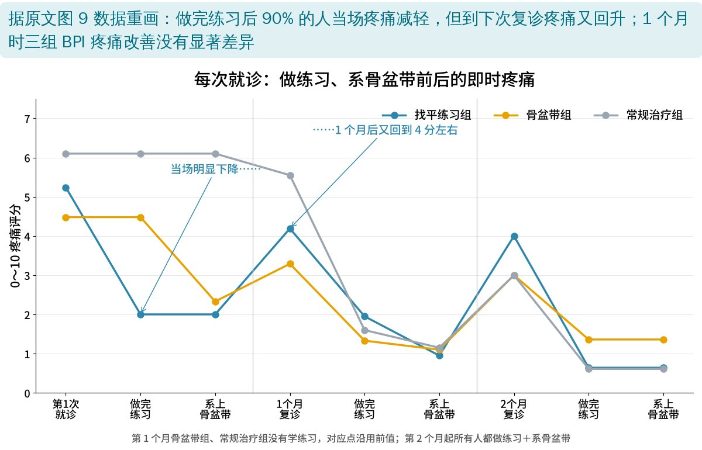
🔖即时疼痛变化（据原文图 9 数据重画）
• 即时效果：做完练习后 90% 的人当场疼痛减轻（初诊 19/21，1 个月时 54/60）
• 但从图上看，当场降下来的疼痛到下次复诊又回升——这是“痛了就做”的按需方案，不是一次做完就好
• 偏好：35% 只想用练习，13% 只想用骨盆带，48% 两样都要
• 副作用都很轻：练习 5 人（腿痛、一人关节过度活动矫枉过正等），骨盆带 13 人（摩擦不适、皮肤刺激、活动受限）
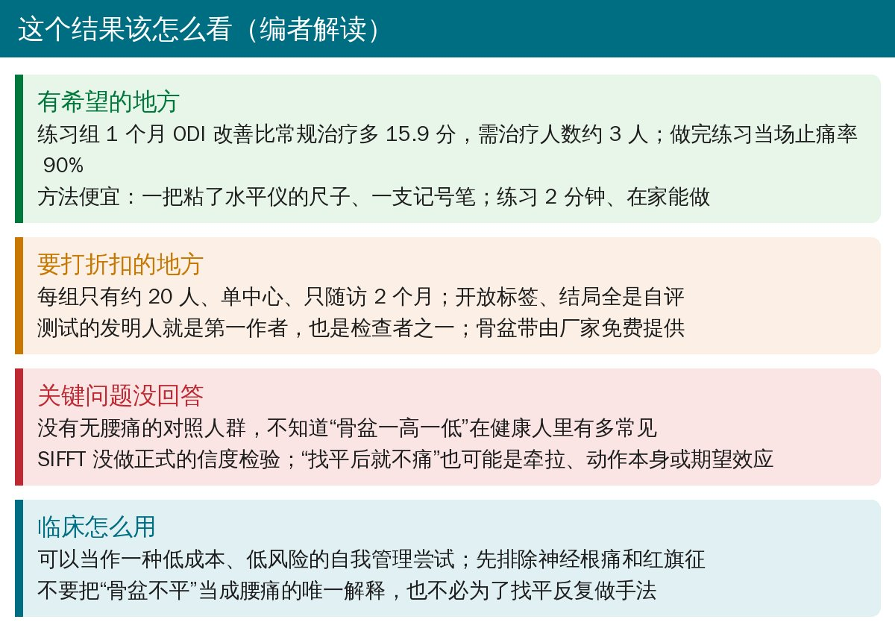
🔖编者解读
• 设计偏弱：每组约 20 人、单中心、只随访 2 个月；开放标签、不设盲，结局全靠自评；常规治疗组“什么新东西都没给”，期望效应无法排除
• 随机化有瑕疵：区组只有 3，医生可以猜到下一个分组；2 名替补参与者没有随机，直接进了治疗组（作者也承认）
• 测量没验证：SIFFT 没做正式的信度检验；不同检查者对“哪侧高”的判断只有 30/40 一致；“前旋／后旋”是从 PSIS 高低推出来的，没用影像证实
• 缺少无痛对照：86% 的腰痛患者“骨盆不平”，但不知道健康人有多少；高度差和腰痛是否有因果关系，这个研究回答不了
• 利益相关：测试和练习是第一作者自己开发的，她也是检查者之一；骨盆带由厂家免费提供
• 骨盆带副作用人数：摘要写 12 人（19%），正文写 13 人（21%），正文列出的 7＋3＋3 也是 13 人
• 2 个月 ODI 改善：摘要写 12.0±18.4 分，正文写 13±22 分
• 练习组 vs 骨盆带组的结论自相矛盾：说“没有优于骨盆带”，但给出的 95% CI（1.1～17.5）并不包含 0；而且这个区间的中点是 9.3，和报告的差值 8.2 对不上
• 高度差的置信区间：练习组比常规治疗多缩小 8 mm，95% CI 却是 1.3～8.8 mm，差值几乎贴在上限
• 压痛韧带前后不一：方法里入组看的是“骶髂后长韧带”压痛，附录的回顾资料写的是“骶结节韧带”
• “排除其他病因”的说法：方法说“高度差 ≥5 mm 这一条就排除了局部或全身病变、手术史、盆底内脏问题等其他腰痛原因”，一个骨盆高低差做不到这一点
• 人数：图 9 图注写 1 个月时 n＝62，但当时只剩 60 人（正文也写 54/60）
• 缩写写错：图 9 和附录把 SIFFT 解释成“骶髂找平练习”，SIFFT 其实是“骶髂前屈试验”；表 1 的“女性”一行重复出现，表 4 有一格写成“All (0.8)”；Kruskal-Wallis 拼成 Kruskal-Wallace
• 数字小出入：基线 ODI 练习组表 1 写 40、表 2 写 41；BPI 表 1 与表 4 也差 0.1；偏好两样都要的 29/60 是 48%，原文写 49%
• 先排除神经根痛和红旗征，这套方法只针对非特异性腰痛中怀疑骶髂来源的人
• SIFFT 只要一把尺子、一个小水平仪、一支记号笔，可以作为选择练习方向的参考，但别把“骨盆不平”当成腰痛的唯一解释
• 弓步拉伸式本身就是屈髋肌牵拉，低风险，可以作为“痛了就做”的自我管理工具；关节过度活动的人要小心矫枉过正
• 骨盆带系在髂前上棘下方，在容易诱发疼痛的活动时用；单独用效果有限
• 要证明“找平”真的有效，还需要多中心、设盲、更长随访、有可靠测量的研究
欢迎关注骨科康复小黄公众号，获取更多物理治疗的专业知识！
📄参考文献：
Bertrand H, Reeves KD, Mattu R, Garcia R, Mohammed M, Wiebe E, Cheng AL. Self-treatment of chronic low back pain based on a rapid and objective sacroiliac asymmetry test: a pilot study. Cureus. 2021;13(11):e19483. doi:10.7759/cureus.19483
原文以知识共享署名 4.0（CC BY 4.0）协议开放获取。原文图 1～7 引自原文，中文标签为编者所加；ODI 和疼痛变化图据原文表 2、图 9 的数据重画；研究设计卡、判断方向卡和解读卡为编者整理。